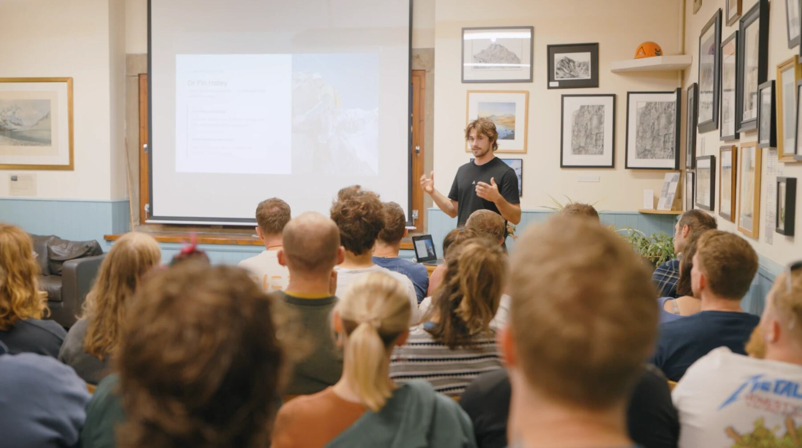
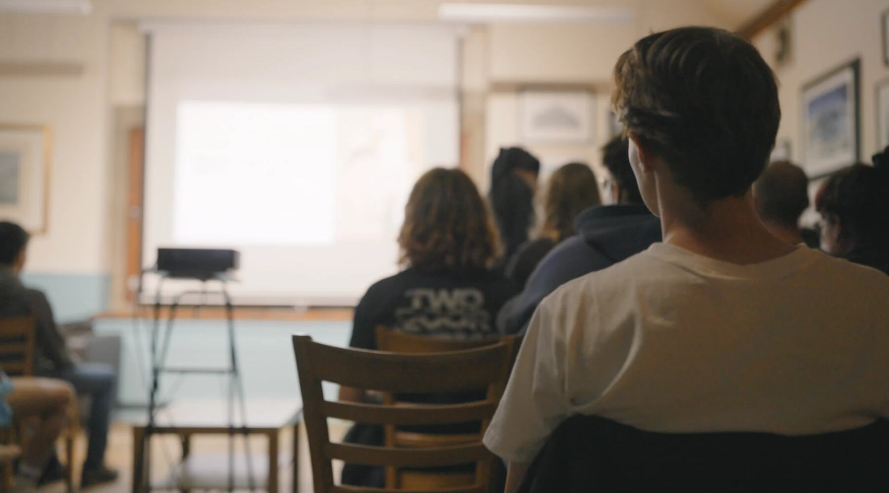
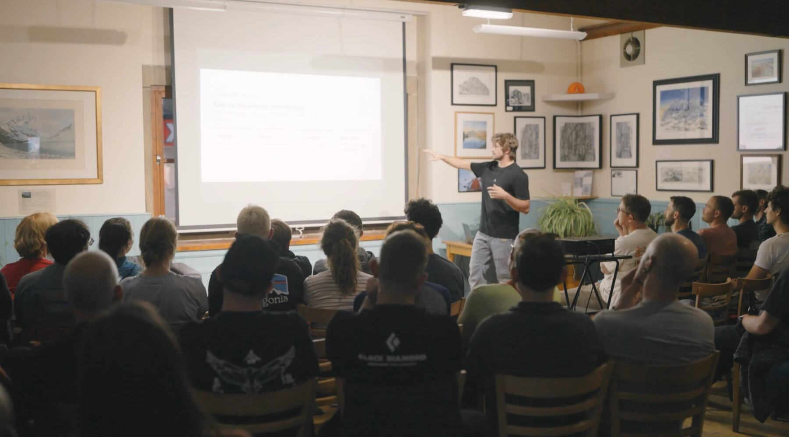
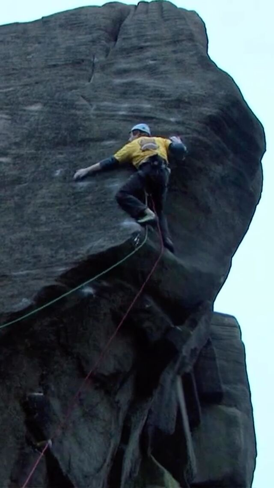

You spot a route you’d love to try. The moves look possible, but your attention keeps returning to one question: what happens if I fall?
Perhaps you pull on anyway, only to shout “take” before the difficult move. Perhaps you grip harder than you need to. Or perhaps you quietly choose something else.
These were the experiences at the centre of our Fear of Falling talks at The Foundry, Outside and The Climbing Works. Led by Dr Fin Haley, Clinical Psychologist and Rock Climbing Instructor, the sessions brought psychology and climbing together to explore why fear shows up, what keeps it going, and how to work with it.
Couldn’t make it along? The recorded talk is available free, so you can explore the ideas in your own time.

1Understanding the fear behind the climbing
The starting point wasn’t “be braver”. It was understanding what happens when fear takes over.
We explored the connection between the body’s threat response, the thoughts running through our minds, and the things we do next. The talk invited climbers to consider their own pattern: what triggers their fear, how it feels physically, what they tell themselves, and how they respond.
From there, we looked at the avoidance cycle. Backing away from a feared fall can bring immediate relief, but it can also leave that fear unchallenged. We explored this pattern in the context of appropriate fall practice — not situations where backing off is the right response to a genuine risk.
Fin also shared his own experience of growing up climbing on Peak District grit and alpine rock while remaining frightened of falling, and how that led him to apply psychological approaches to his own climbing.

2Why “just take a big fall” misses the point
One question ran through the talk: why can someone take big falls and still feel just as frightened the next time?
Rather than treating fall practice as a test of courage, we introduced the window of tolerance — a way of thinking about the difference between manageable discomfort and feeling overwhelmed. The emphasis was on building practice around the person, rather than expecting everyone to start in the same place.
The practical section centred on four ideas:
- Notice your avoidance. Recognise the moments when fear starts making decisions about your climbing.
- Grade your practice. Start with a challenge you can cope with, rather than throwing yourself in at the deep end.
- Give practice enough time. One quick fall is not the same as spending time working with the fear.
- Keep it varied. Confidence developed in a familiar exercise needs to carry into different climbing situations.
The recording takes you through the reasoning behind each principle, including why being comfortable during planned fall practice does not always translate into feeling comfortable when trying a difficult route.


3And when the consequences are real?
The talks also addressed an important boundary: not every fall belongs in fall practice.
For situations with serious consequences, we shifted towards risk assessment and experience, outlining a three-step decision framework: assess the risk, decide whether you are willing to accept the consequences, and plan your response. Alongside it was a pyramid of experience, built on plenty of climbing well within your ability — not repeated exposure to dangerous falls.
The aim was not to encourage climbers to ignore fear, but to distinguish between fear to work with and risk to take seriously.

4Missed the talks? Start here
Thank you to The Foundry, Outside and The Climbing Works for hosting, and to everyone who came along.
For those who missed the sessions, the recording is an opportunity to understand your own fear and explore a more structured approach to it. It also introduces the Fear of Falling Toolkit, our paid guided programme — but you do not need to buy the Toolkit to access the talk.
Enter your email below, confirm your address, and we’ll send you the recording. You can watch at your own pace, revisit the explanations, and use the reflection prompts to consider what happens in your own climbing.
You don’t have to begin with a bigger fall. Begin by understanding the fear.